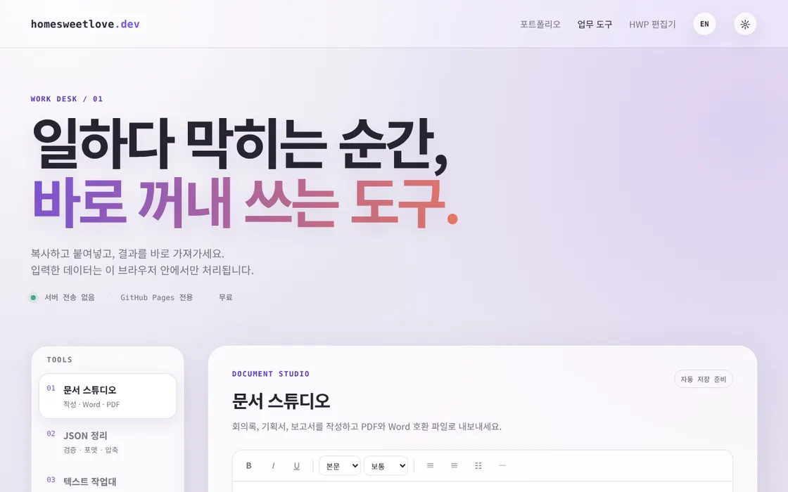
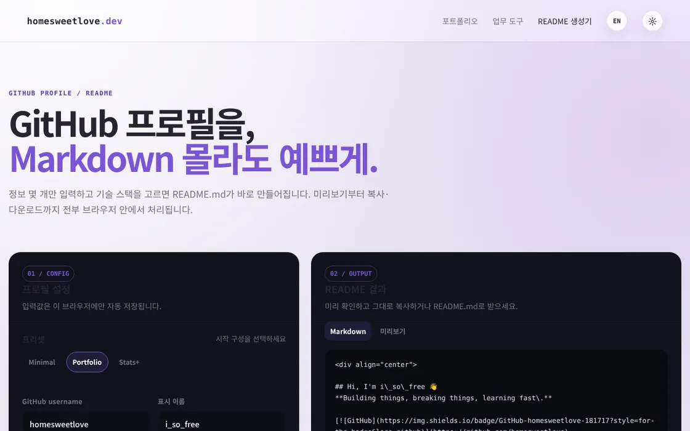
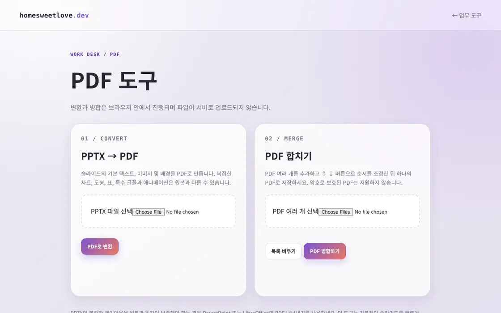

실험실과 도구
대표 프로젝트 외의 실험과 사용 가능한 도구는 이곳에 모았습니다. 구현 범위가 다른 프로젝트를 같은 수준의 완성품처럼 표현하지 않습니다.
- 업무 도구문서 작성, JSON 정리, 텍스트 작업을 브라우저에서 바로

- README 생성기몇 가지만 입력하면 GitHub 프로필 소개 글이 완성

- PDF 도구PPTX 변환과 PDF 합치기를 서버 전송 없이

앱과 유틸리티
인터페이스와 데모
지역·여행 프로젝트
글과 수업 코드
IT·보안 뉴스 한국어판 ↗ · English edition ↗ — 발행된 50개 날짜의 한·영 기록
시스템 프로그래밍 ↗ · 시간표 추천 프로젝트 ↗ — 학습 및 과제 기록